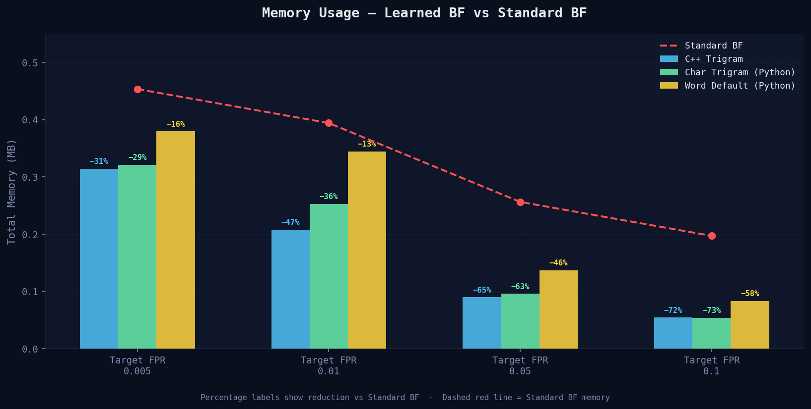
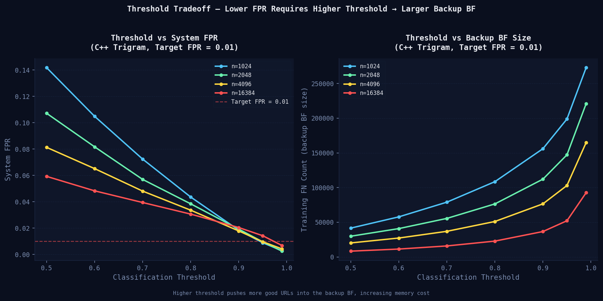
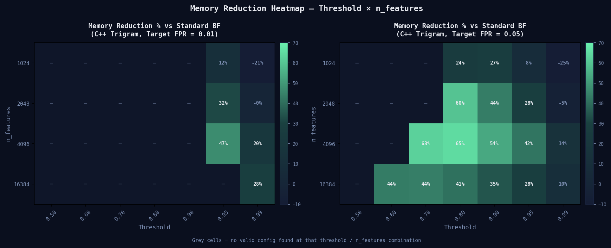
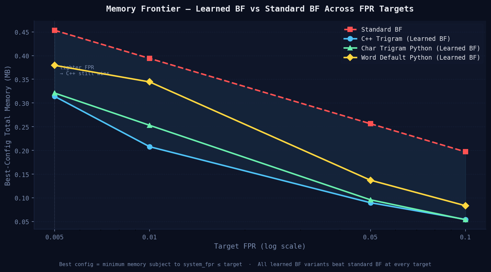

Replacing hash-based membership checks with a machine learning oracle backed by a constrained Bloom filter — benchmarked across three vectorisation strategies and 140 configurations on 420K URLs.
Baseline — all good (in-set) training URLs inserted directly.
Model handles bulk classification; backup BF patches training FNs only.
Built from scratch in C++17, exposed to Python via pybind11.
Membership testing — not binary classification.
The project evolved through three vectorisation strategies, each trading model quality against latency differently. The progression from word tokens → char trigrams → fused C++ kernel tells the story of closing the gap between a research prototype and a deployable system.
scikit-learn's default word-level tokeniser splits URLs on whitespace and punctuation, producing ~3–8 word tokens per URL. Each token maps to a hashed feature bucket. Fast to run but discards all subword structure — path components, subdomains, and query strings are split into fragments that lose their malicious signal context.
Switching to analyzer='char', ngram_range=(3,3) captures
subword patterns like .ph, /ad,
:// that word tokens miss entirely. A URL of length L
produces L−2 trigrams, averaging ~160 NNZ per row — 26× denser
than word tokens. Model quality improves substantially, but latency explodes because
scikit-learn's sparse matrix pipeline is bottlenecked on CSR construction and batch numpy operations.
The C++ kernel eliminates Python overhead entirely. Vectorisation and scoring are
fused into a single pass over the URL string —
no CSR matrix is built, no intermediate data is allocated. A rolling hash computes
each trigram in O(1). Model weights exported from sklearn are stored in a
double[] array; the logit accumulates inline.
All latency figures are measured from Python via time.perf_counter_ns(),
wrapping a single batched pybind11 call, with warmup runs before timing and the mean
taken over 10 trials divided by batch size — consistent methodology across all variants.
All latency figures — Python and C++ alike — are mean amortised per-query costs
measured consistently from Python using time.perf_counter_ns(), wrapping a single batched call
per variant with 3 untimed warmup runs followed by 10 timed trials, divided by batch size.
This methodology captures the full Python↔C++ crossing overhead on both sides and reflects
steady-state throughput under batch load, not single-query online latency.
The 54× gap between C++ and Python char trigrams reflects the architectural difference —
eliminating CSR construction, intermediate allocation, and generic sklearn call.




| Target FPR | n_features | Threshold | Backup FPR | System FPR | System FNR | Memory (MB) | Std BF (MB) | Reduction |
|---|---|---|---|---|---|---|---|---|
| 0.005 | 4096 | 0.990 | 0.001 | 0.004296 | 0.000 | 0.314 | 0.453 | −30.7% |
| 0.01 | 4096 | 0.950 | 0.001 | 0.009720 | 0.000 | 0.208 | 0.394 | −47.3% |
| 0.05 | 4096 | 0.800 | 0.010 | 0.043493 | 0.000 | 0.090 | 0.256 | −65.0% |
| 0.1 | 4096 | 0.500 | 0.010 | 0.090422 | 0.000 | 0.054 | 0.197 | −72.4% |
| Target FPR | n_features | Threshold | Backup FPR | System FPR | System FNR | Memory (MB) | Std BF (MB) | Reduction |
|---|---|---|---|---|---|---|---|---|
| 0.005 | 16384 | 0.900 | 0.001 | 0.004369 | 0.000 | 0.321 | 0.453 | −29.2% |
| 0.01 | 16384 | 0.800 | 0.001 | 0.009377 | 0.000 | 0.253 | 0.394 | −35.8% |
| 0.05 | 4096 | 0.800 | 0.010 | 0.033644 | 0.000 | 0.096 | 0.256 | −62.6% |
| 0.1 | 4096 | 0.500 | 0.010 | 0.048120 | 0.000 | 0.054 | 0.197 | −72.7% |
| Target FPR | n_features | Threshold | Backup FPR | System FPR | System FNR | Memory (MB) | Std BF (MB) | Reduction |
|---|---|---|---|---|---|---|---|---|
| 0.005 | 16384 | 0.950 | 0.001 | 0.004230 | 0.000 | 0.379 | 0.453 | −16.3% |
| 0.01 | 4096 | 0.950 | 0.001 | 0.007800 | 0.000 | 0.344 | 0.394 | −12.6% |
| 0.05 | 4096 | 0.800 | 0.010 | 0.046000 | 0.000 | 0.137 | 0.256 | −46.5% |
| 0.1 | 4096 | 0.600 | 0.010 | 0.099940 | 0.000 | 0.083 | 0.197 | −57.7% |
Char trigrams consistently produce better memory savings than word tokens across all FPR targets — the gap is largest at relaxed targets (72% vs 58% at FPR = 0.1) and narrows at tight targets. Trigrams capture subword patterns like .php, /admin/, and %20 that word tokens split apart, giving the model stronger discriminative signal and reducing training FNs that inflate the backup BF.
Every FPR target has a minimum achievable threshold below which no valid config exists. Higher thresholds lower FPR but raise fn_count, directly inflating backup BF size and eroding memory savings. At FPR = 0.005, the threshold must reach 0.99 for the C++ variant — pushing fn_count above 150K. At FPR = 0.1, threshold = 0.50 suffices with fn_count well under 50K.
The C++ implementation achieves ~0.5 microseconds mean amortised per-query cost, compared to ~26 microseconds for Python char trigrams — a 54× difference. Both numbers are measured identically: Python time.perf_counter_ns() wrapping a single batched call, 3 warmup runs, mean of 10 trials, divided by batch size. The gap is architectural — eliminating CSR construction, intermediate allocation, and generic sklearn dispatch — not a difference in measurement methodology.
The C++ learned BF at ~0.5 microseconds total is 2.5× slower than the standard BF at ~0.2 microseconds . This overhead is structural — the model scoring pass is an unavoidable addition to the BF lookup. The standard BF will always win on latency; the learned BF trades latency for memory.
System FNR = 0.000 across all 420 configurations (140 per variant). This is not a model quality result — it follows from the experimental design. All good URLs appear in both train and test sets. The backup BF sees every member the model misclassified at training time, and since those same members reappear at test time, recovery is guaranteed. A weaker model simply routes more URLs through the backup BF at higher memory cost.
Across all three variants and all FPR targets, n_features = 4096 dominates best-config selections. Larger feature spaces (16384) reduce hash collisions and improve oracle quality, but the linear growth in model weight memory (n_features × 8 bytes) outweighs the reduction in backup BF size. n_features = 4096 sits at the crossover where oracle quality and model memory are best balanced for this dataset and feature type.
time.perf_counter_ns() in Python,
wrapping a single batched pybind11 call with 3 untimed warmup runs and a mean over 10 timed trials,
divided by batch size. This reflects steady-state throughput under batch load.
A real serving system processing one URL at a time would experience higher latency on both sides
due to per-call Python↔C++ crossing overhead that is amortised away in the batch measurement.